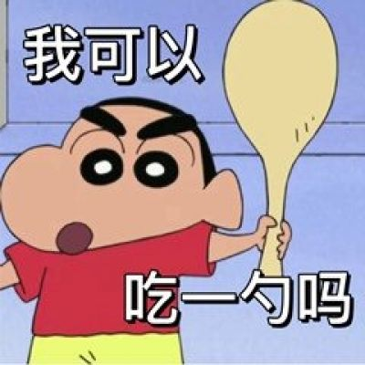

static：元素的默认值，即没有定位，遵循正常的文档流对象。静态定位的元素不会受到 top, bottom, left, right影响。
pos_fixed：元素的位置相对于浏览器窗口是固定位置。即使窗口是滚动的它也不会移动：
pos_right：相对定位元素的定位是相对其正常位置。
absolute
sticky
裁剪元素的外形:

如果元素中的内容超出了给定的宽度和高度属性，overflow 属性可以确定是否显示滚动条等行为。
overflow: scroll:
菜鸟教程 -- 学的不仅是技术，更是梦想！！！菜鸟教程 -- 学的不仅是技术，更是梦想！！！菜鸟教程 -- 学的不仅是技术，更是梦想！！！菜鸟教程 -- 学的不仅是技术，更是梦想！！！
overflow: hidden:
菜鸟教程 -- 学的不仅是技术，更是梦想！！！菜鸟教程 -- 学的不仅是技术，更是梦想！！！菜鸟教程 -- 学的不仅是技术，更是梦想！！！菜鸟教程 -- 学的不仅是技术，更是梦想！！！
overflow: auto:
菜鸟教程 -- 学的不仅是技术，更是梦想！！！菜鸟教程 -- 学的不仅是技术，更是梦想！！！菜鸟教程 -- 学的不仅是技术，更是梦想！！！菜鸟教程 -- 学的不仅是技术，更是梦想！！！
overflow: visible (默认):
菜鸟教程 -- 学的不仅是技术，更是梦想！！！菜鸟教程 -- 学的不仅是技术，更是梦想！！！菜鸟教程 -- 学的不仅是技术，更是梦想！！！菜鸟教程 -- 学的不仅是技术，更是梦想！！！
更改光标----请把鼠标移动到单词上，可以看到鼠标指针发生变化：
auto
crosshair
default
e-resize
help
move
n-resize
ne-resize
nw-resize
pointer
progress
s-resize
se-resize
sw-resize
text
w-resize
wait